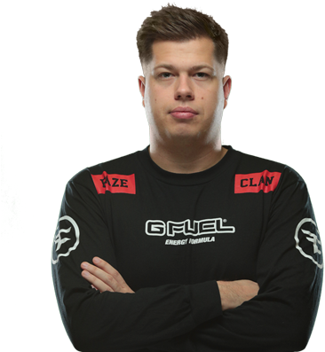

Финн Андерсен (род. 14 апреля 1990) — датский профессиональный игрок в Counter-Strike 2, более известный под псевдонимом karrigan. Капитан команды FaZe Clan. Также выступал за некоторые другие команды, такие, как Fnatic, Team Dignitas, Team SoloMid, Astralis, Mousesports и Team Envy. В 2015 году основал команду Astralis. Профессионально играть начал в 2006 году, когда была популярна игра Counter-Strike 1.6.
Брат Андерсена увлёкся игрой Counter-Strike около 2001 года и вскоре показал её Финну. Финн начал профессионально играть в 2006 году, а 5 ноября 2010 года присоединился к команде Full-Gaming, в состав которой также вошли Майкл «Friis» Йоргенсен и Тимм «ArcadioN» Хенриксен.В 2015 году Андерсен окончил магистратуру по бизнес-администрированию и осуществлению аудитов в Copenhagen Business School. Сейчас он проживает в Орхусе.
Одержал победу на PGL Major Antwerp 2022, став самым возрастным победителем мейджора в истории CS:GO. Признан лучшим капитаном 2022 года по версии HLTV.org.
